Rongdi Wang Hao Wang Zhenhao He Jianchao Zhu Haiqiang Zuo
Received: date / Accepted: date
Weld defect detection is an important task in the welding process. Although there are many excellent weld defect detection models, there is still much room for improvement in stability and accuracy. In this study, a lightweight deep learning model called WeldNet is proposed to improve the existing weld defect recognition network for its poor generalization performance, overfitting and large memory occupation, using a design with a small number of parameters but with better performance. We also proposed ensembledistillation strategy in the training process, which effectively improved the accuracy rate and proposed an improved model ensemble scheme. The experimental results show that the final designed WeldNet model performs well in detecting weld defects and achieves state-of-the-art performance. Its number of parameters is only of that of ResNet18, but the accuracy is higher, while achieving 41 FPS on cpu to meet the demand of real-time operation. The study is of guiding significance for solving practical problems in weld defect detection, and provides new ideas for the application of deep learning in industry. The code used in this article is available at:
https://github.com/Wanglaoban3/WeldNet.git
Keywords Convolutional neural networks Weld defect Model ensemble Knowledge distillation
Corresponding author: Haiqiang Zuo. Email:
zhqupc@upc.edu.cn
Rongdi Wang, Hao Wang, Zhenhao He, Jianchao Zhu, Haiqiang Zuo
China University of Petroleum (East China), College of New Energy, Qingdao, 266580, Shandong, China
Welding is a technique to join two or more metal workpieces together and is widely used in industry. There are different types of welding such as manual welding, MIG, TIG, arc welding, laser welding, plasma welding, etc.[6, . The classification and selection of welding depends on factors such as material, application scenario and cost. Although welding is a common technology, the welding process and the generation of welding defects are complex and diverse, and the generation of defects may lead to weak and easily fractured welded connections, which can lead to serious accidents and serious human and material losses. Therefore, the detection and evaluation of welding defects is of great importance, and the development of a portable and rapid defect detection method is even more important.
Welding defects are defects that may occur during the welding process, including unfused, porosity, slag, overburning, cracks, burrs, etc.[27,26], and the presence of these defects may lead to accidents and cause great losses. Therefore, for welded parts welding quality evaluation and welding defects detection becomes critical.
Traditional methods of weld defect detection include visual inspection, X-ray inspection, ultrasonic inspection, eddy current inspection, and magnetic particle inspection . In industrial weld defect detection, visual inspection is widely applied by technicians due to its low cost, high reliability, and minimal need for additional equipment. However, visual inspection is heavily reliant on the experience of the technicians. As work intensity increases, the efficiency of manual inspection decreases significantly. Therefore, the automation of weld defect detection is imperative. In 2015, Gao et al. [8] proposed a reliance on active visual systems to obtain the characteristics of the molten pool morphology dur-
ing the welding process, by analyzing the relationship between the molten pool morphology and the stability of the welding process to judge the classification of welding defects. While Chen et al. [4] used a high-speed infrared camera to photograph the molten pool during the welding process and analyze the thermal imaging images obtained. Huang et al. [15] designed an eddy current orthogonal axial probe for eddy current detection of carbon steel plate welds, and the experiment proved that the probe can effectively detect the effect of unevenness of the weld surface on the lifting-off effect. Silva et al. proposed a Segmented analysis of timeof-flight diffraction ultrasound for flaw model, which is able to identify the type of defects in the welding process by analyzing ultrasonic signal fragments [23]. Du et al. [5] proposed a fusion of background subtraction and grayscale wave analysis for defect classification by analyzing weld x-ray.
Although most of the above methods achieve a better detection effect, there are still many problems with these methods. For example, they require specialized equipment and skills, are difficult to implant, do not generalize well, require a lot of time and labor costs for on-site debugging, are not very intelligent, etc. To overcome these problems, more and more researchers are using deep learning techniques for welding defect detection .
Deep learning techniques are a neural network-based machine learning method with a high level of automation and the ability to process complex data, and they excel in image and video processing. CNN is a commonly used neural network structure in deep learning, which is mainly used in computer vision fields such as image recognition classification and target detection. It achieves feature extraction, abstraction and classification of images through multiple layers of computation and learning such as convolutional layer, pooling layer and fully connected layer, and relies on the back propagation algorithm [22] to update the parameters in the model. Common CNN models include AlexNet, VGG, ResNet, MobileNet, etc. [10,12,16,24], all of which are widely used for various vision tasks including defect detection. Compared to relying on traditional image processing, where features are extracted manually for image preprocessing and then entered into SVM classification, deep learning-based models can achieve better performance by simple training without human intervention and without complex tuning of parameters. Bacioiu et al. proposed a series of CNN models for TIG welding of SS304 and Aluminum 5083 materials, respectively, which are capable of classifying images by simply inputting images taken by industrial cameras of the weld seams during the welding pro- cess. On their publicly available SS304 dataset, a maximum accuracy of was achieved for a 6 -class defect classification task. Ma et al. [19] developed a CNN network for detecting and classifying defects generated during fusion welding of galvanized steel sheets, and he achieved recognition accuracy using AlexNet, VGG networks combined with data enhancement and migration learning. Golodov and others also achieved automatic classification and recognition of defective parts by optimizing existing CNNs for weld image segmentation. Xia et al. [29] designed a CNN model for defect classification during TIG welding, which was optimized for the interpretation of the CNN model. In addition to classification using images alone, a multisensor combined with deep learning approach has also been used to accomplish defect classification. Li et al. [18] designed a triple pseudo-twin network by simultaneously inputting images, sound and current-voltage signals of the molten pool during the welding process and using the network to automatically fuse the information collected by different sensors to finally output the classification results.
With the help of deep learning, the weld defect recognition model demonstrates excellent performance, which greatly reduces the workload of workers. The introduction of this technology not only improves the accuracy and efficiency of weld quality inspection, but also enhances the automation level of welding production lines, bringing more advantages to the production process. However, existing detection models developed based on deep learning often suffer from problems such as easy overfitting of the model, insufficient generalization performance and rely on specialized devices such as GPUs during operation. Therefore, in this study, we address the above challenges by proposing a lightweight welding defect detection model based on deep learning techniques, which we call WeldNet. It only requires an image of the input weld surface to complete the classification and can run in real-time on CPUs. In experiments tested on publicly available datasets, it has a smaller number of parameters and better performance than any existing common models. The experimental results show that our model achieves the best results in weld defect detection, has stronger generalization performance, has the advantages of fast, efficient and accurate, and provides a strong support for weld defect detection in industry. The contributions of this paper are as follows:
(1) We design a lightweight network called WeldNet, which exhibits superior performance and faster inference speed in the field of weld defect recognition compared to mainstream models;
(2) We propose a novel model training method for weld defect recognition models, called the ensembledistillation strategy, which significantly improves model performance without introducing any additional computational overhead during model deployment. This approach allows for more efficient operation of the model during deployment while achieving remarkable performance enhancements.
(3) Our proposed model exhibits significantly higher accuracy and faster inference speed compared to other models in performance comparisons on public datasets. Furthermore, it is capable of real-time execution on CPU devices, which holds great significance for the future development of weld defect recognition models.
Our steps are as follows: first, we introduce the implementation algorithms and ideas involved in section 2 , design the relevant experiments and reveal the specific experimental details in section 3, analyze the experimental results and discuss them in section 4, and conclude in the last section.
This section first introduces the dataset in this paper, followed by a description of the algorithms and principles used.
This paper uses the TIG Al5083 weld defect public dataset by Bacioiu et al. [2] in 2019, which was collected using an HDR camera to photograph the molten pool area during the welding process. Different classes of defects were generated by controlling the input current and the speed of movement of the welding process, and a total of 33254 weld images of six classes including good weld were collected, including 26666 in the training set and 6588 in the test set according to the division. The specific distribution of each category is shown in Table 1 and a sample is shown in Figure 1. The dataset is currently available at
https://www.kaggle.com/datasets/danielbacioiu/tigaluminium-5083.
In recent years, due to the continuous development of artificial intelligence technology, CNN is widely used in the image field as a neural network with excellent performance. For example, it was featured in the early handwritten digit recognition [17], and the ImageNet
Table 1 Number of categories in the training and test sets.
| Label | Number of samples | |
|---|---|---|
| Train | Test | |
| Good weld | 8758 | 2189 |
| Burn through | 1783 | 351 |
| Contamination | 6325 | 2078 |
| Lack of fusion | 4028 | 1007 |
| Misalignment | 2953 | 729 |
| Lack of penetration | 2819 | 234 |
| Total | 26,666 | 6588 |
competition [16] in 2012. The main features of CNN are its ability to automatically learn useful features from the original data and its good hierarchical structure to extract higher-level features layer by layer. The most important ones in CNN are convolutional layer and pooling layer. Convolutional layer can effectively extract local features in images, and pooling layer can reduce the number of fused features and computation, highlight important features while filtering minor features, and increase the overall generalization ability of the model. The algorithm of CNN is shown in Figure 2,3 and 4 . By setting a convolution kernel of fixed size and using the convolution kernel to slide over the image to calculate the product sum of the convolution kernel and the corresponding region. Where stride represents the step size of each convolution kernel move. Figure 3 shows the operation process of pooling layer, the principle of which is similar to convolution, the difference is that the region mapped by the convolution kernel takes the average or the maximum. Padding is usually used in scenarios where the convolutional kernel size is larger than 1. This approach can keep the input and output sizes consistent without losing edge information.
In image classification, CNN and FCN (Fully Connect Networks) are usually used in combination. After a large number of convolution and pooling layers, the size of the feature map gradually becomes smaller from the original map. It is transformed into vector form by the flatten operation, and finally the probability of each class is output after one or more fully connected layers. The algorithm for the fully connected layers is shown in Figure 5. FCN uses the input vector to multiply with the weight matrix, adds a bias term, and finally outputs a result through the activation function. The calculation formula is: . Take the example of in the figure (bias omitted): .
The parameter updating process of the neural network can be expressed as equation 1.
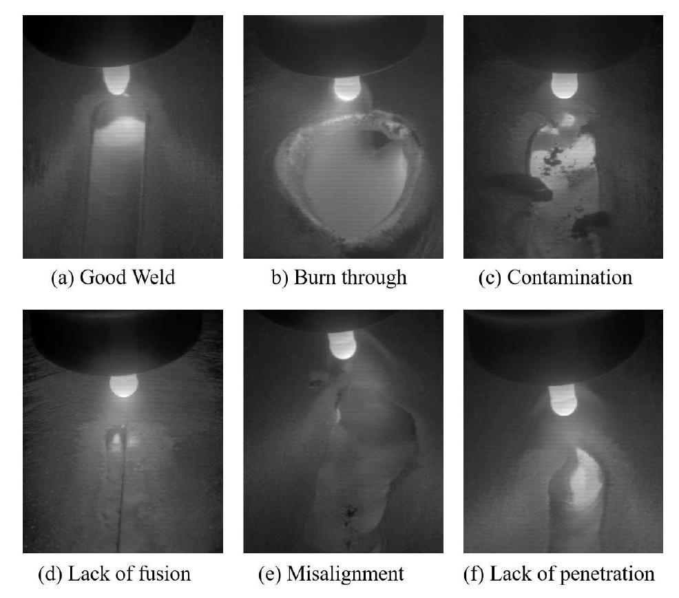
Fig. 1 Samples of 6-classes defect.
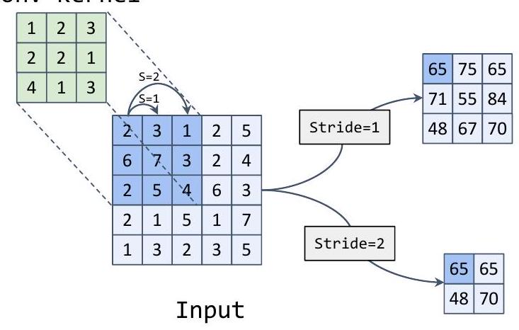
Fig. 2 convolutional layer
where denotes the weight connecting the th neuron to the th neuron, is the loss function, and is the learning rate, which indicates the step size of each update. denotes the partial derivative of the loss function with respect to , i.e., the rate of change of the loss function with respect to under the current parameters. In backpropagation, the partial derivatives of each parameter can be calculated by the chain rule, and then updated in this way when updating the parameters. In this way, the above process is repeated until the loss function converges, and a better network parameter is obtained.
Figure 6 shows a classical CNN network called ResNet which consists of several convolutional and pooling layers and a fully connected layer. An input RGB image of size is continuously convolved and pooled
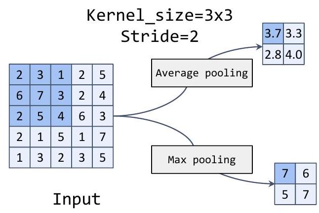
Fig. 3 pooling layer
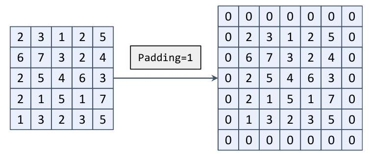
Fig. 4 The padding operation in CNN.
to obtain a feature map, and finally a Flatten operation and a fully connected layer are used to obtain 8 the probability of each category. In the convolutional layer, the parameter after conv is the number of output channels, k represents the convolutional kernel size s represents stride. Here the padding parameter setting
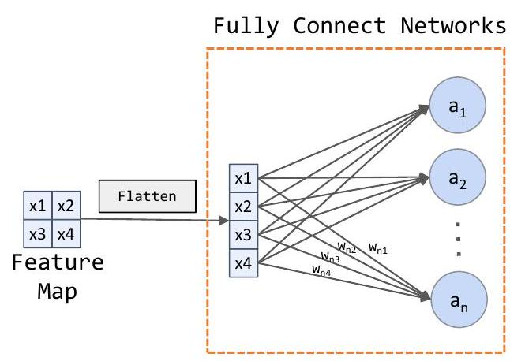
Fig. 5 Flatten and fully connected layer.
is omitted and the padding of each convolutional layer is and rounded down. The Batch Normalization layer and activation function layers omitted after each convolutional layer. AdapativeAvgpool is an adaptive average pooling layer that converts the input feature map to the target size, here we change after the pooling layer to .
The style of WeldNet proposed in this paper is slightly similar to ResNet, which is also a neural network composed of CNN+FCN, but the modules in it are optimized. The details are shown in Figure 7. We designed a WeldBlock structure, which consists of a convolutional layer, a average pooling layer and two convolutional layers. This avoids the problem that the convolution process loses details when the convolution layer stirde is set to 2 . The 32 after the first convolutional layer represents the number of output 32 channels. The e parameter in WeldBlock is a scaling factor that controls the module in which the output channel of the convolution layer is the input channel e , and s stands for stride.
Model ensemble is a common means to improve model stability and generalization performance. The principle is to use the same dataset to train multiple models simultaneously and average the output results to obtain the final result [13]. Since each model is initialized with different parameters, the order of each sample in the traversed dataset is different, and the form of each data augmentation is different, making each model trained have different degrees of generalization, and also avoiding the problem of unstable training process due to model initialization and dataset order in the process of training a single model. Combining the outputs of all models on average usually results in better performance than a single model [28]. The principle is shown in Figure 8.
However, the use of model ensemble results in a significant increase in inference time and memory consumption, which is not conducive to practical weld defect assessment in real-world environments. Therefore, we propose the utilization of knowledge distillation to reduce the model size. Knowledge distillation is a technique for transferring knowledge from a large neural network to a small neural network. Unlike model compression, the goal of knowledge distillation is not to reduce the size and computational burden of a model, but to transfer knowledge from a large neural network (called teacher network) to a small neural network (called student network), thereby improving the accuracy, generalization, and robustness of the student model [1]. Usually, a teacher network is first trained on the dataset until convergence, and then the teacher network is used to predict values for each sample as labels for the training of the student network instead of the real labels produced in the dataset, and finally the student network is trained so that the student network learns the knowledge of the teacher network while avoiding the high memory and computing power overhead of the teacher network [25]. The principle is shown in Figure 9.
In this study, we propose a novel training method for weld defect detection models, which involves first training multiple single models and then using the trained models as teacher networks for knowledge distillation. This method effectively improves model performance without increasing additional parameters or computational costs. For specific implementation details, please refer to Algorithm 1.
Among the existing model ensemble techniques, we think it is too simple and brutal to directly add up the predicted values of each model. Considering the model prediction, when the confidence level of a model prediction is high, we should trust the prediction of that model more. Therefore, we proposed a new combination to amplify the high confidence prediction values, we call Focal Ensemble, which is calculated as equation 2.
where represents the final predicted value, represents the individual model predicted value, represents the number of models and represents the weight of ensemble.
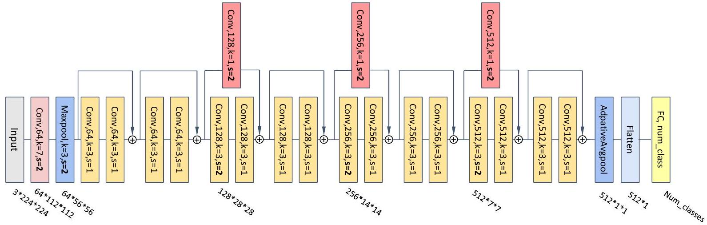
Fig. 6 ResNet18.
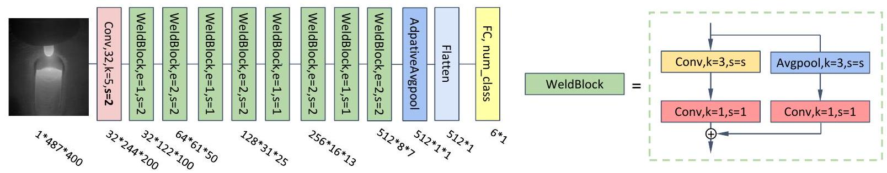
Fig. 7 WeldNet(Ours).
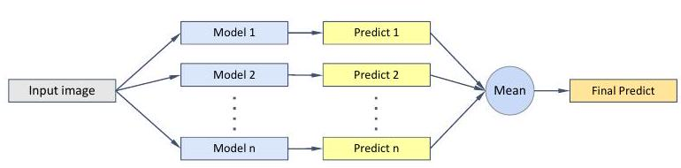
Fig. 8 Model ensemble.
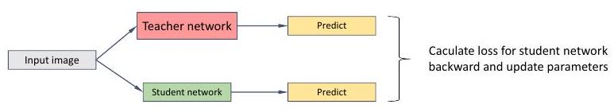
Fig. 9 Knowledge distillation.
In this section, we describe the details of model training, model evaluation criteria, and the selection of hyperparameters in the experiments.
We first compared the training of a single model and model integration, with a SGD optimizer used for the training process and CNN models using Inception v3, the ResNet family and WeldNet of our design, among others. After getting a single model performance comparison, we will compare the performance obtained from different models using model combinations and finally
Algorithm 1: Framework of ensemble-distillation strategy for our system
Input: : number of single model as teacher model
: student model
: training iterations
: model ensemble function
: loss function
Output: Training set
for to do train each teacher model
for to do
Update Parameters
end for
end for
for to do train student model
get model ensemble pseudo label
Update Parameters
end for
select the best performing model for knowledge distillation.
Note that since the dataset is a single channel grayscale map and the final output is a 6 classification probability, we set the first convolutional layer input channel of the above CNN model to 1 and the last fully connected layer output channel to 6 . During the training process we designed a combination of data augmentation means
for this dataset, including rotation, random horizontal and random crop, random brightness and contrast adjustment. For the training set, the images were first randomly crop to , randomly rotated by -30 to 30 degrees, randomly flipped horizontally, randomly adjusted brightness and contrast, and finally the images were scaled down to size and input into our model. For the test set, we only scaled the image to and input it into the model. Figure 10 shows our means of data augmentation.
The language environment we use is Python, and we use the pytorch library for all model training and testing, and the hardware we use is i7-11700k and rtx3080ti. We choose Cross Entropy Loss for the loss function of the training model classification, which is calculated as equation 3.
where denotes all parameters involved in the calculation, denotes the total number of samples, denotes the total number of categories, denotes the true label of the -th sample belonging to the -th category, and denotes the prediction probability of the model for the -th sample belonging to the -th category.
The weld defect classification in this paper is an image classification task, so the accuracy is used to evaluate the model performance, and the formula is calculated as equation 4.
where TP and TN are the numbers of true positive and true negative, and FP and FN mean the false positive and false negative.
The hyperparameters involved in the experiments are the learning rate of the optimizer, and the number of models in the model ensemble. We empirically set the SGD optimizer learning rate to 0.01 , and the learning rate becomes 0.001 after running 15 epochs, and the momentum parameter is set to 0.9 , while 5 models are trained simultaneously in the model ensemble for a total of 25 epochs, the weight k in equation 2 is set to 2 .
In this section, we first compare the performance of different models, followed by a detailed discussion.
The results of single-model training are shown in Figure 11 and 12. Figure 11 shows that when single-model training, the more the number of model parameters, the worse the performance tends to be instead, which is contrary to our previous knowledge. In figure 12 we find that the loss of the model on the training set rapidly decreases and converges to 0 while the loss and accuracy on the test set start to oscillate during training. This indicates that the model quickly learns the classification task on the training set, but as the training loss gets smaller, the model starts to overfit and the performance instead decreases slightly and gradually stabilizes. At the same time, we found that models with more number of parameters are more prone to overfitting, and models with moderate parameters perform better with the number of parameters instead. Our carefully designed WeldNet is able to outperform ResNet18 and other networks. The detailed experimental results are shown in Table 2.
Table 2 Accuracy and number of parameters of different models.
| Accuracy(%) | Parameters(10 | |
|---|---|---|
| MobileNet v3 small | 78.2 | 0.13 |
| MobileNet v3 large | 78.7 | 0.42 |
| WeldNet(Ours) | ||
| ResNet18 | 79.3 | 1.12 |
| ResNet34 | 76.5 | 2.13 |
| Inception v3 | 74.6 | 2.18 |
| ResNet50 | 76.6 | 2.35 |
The results of model ensemble training are shown in Figure 13 and 14. When using multiple models integrated training, it can be found that multiple models, due to different initialization during training, different order of datasets, and different data enhancement methods, combine them together to significantly improve generalization ability and stability, and have a good response to the overfitting that occurs during single model training, improving the performance very considerably even for with a large number of
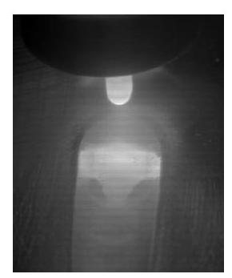
(a) Origin
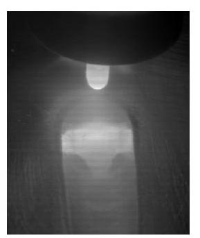
(b) Horizontal flip
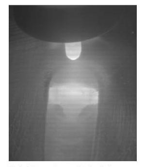
(c) Random brightness contrast
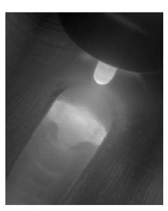
(d) Random Rotate
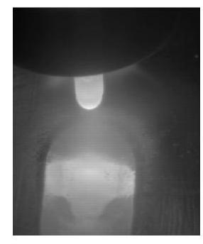
(e) Random Crop
Fig. 10 Data augmentation.
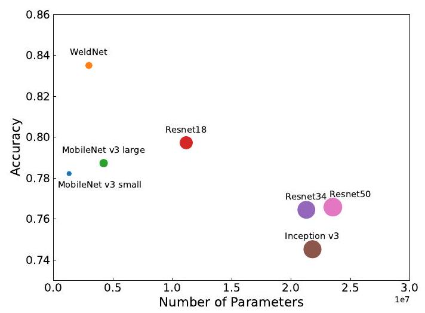
Fig. 11 Accuracy and number of parameters of different models on single model training.
parameters. This inspires us to improve model performance in weld defect recognition tasks not only by modifying the structure and parameters of the model, but also by optimizing the existing training methods, which can significantly improve the model performance. All of our proposed Focal-ensemble results are better than the existing Mean-ensemble, which proves that Focalensemble is effective.
We understand from the above experiments that model ensemble can improve model performance, but it also inevitably increases computing time and memory con-
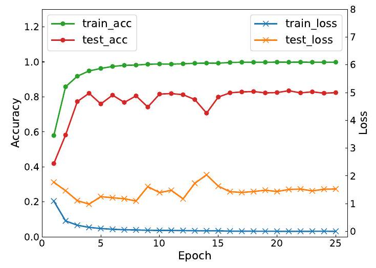
Fig. 12 Accuracy and loss during WeldNet training on single model training
sumption, so we use knowledge distillation to let the labels generated in model ensemble be learned by a single model. We used the WeldNet network trained in the Focal-ensemble approach as the teacher network, a single WeldNet as the student network, and the loss function selected as CE Loss, and finally obtained a WeldNet with an accuracy of , which is only lower than that of the teacher network.
The experimental results show that the model accuracy hardly decreases when the number of model parameters is reduced to a single model size due to knowledge distillation, confirming that the distilled student network is effectively learning the knowledge of the teacher network. Through Table 4 we can find that the model accuracy can be improved significantly by de-
Table 3 Effect of different training methods on model accuracy(%).
| WeldNet | ResNet18 | ResNet34 | ResNet50 | |
|---|---|---|---|---|
| Single model | 83.5 | 79.3 | 76.5 | 76.6 |
| Mean ensemble | 87.6 | 84.9 | 82.0 | 82.0 |
| Focal ensemble(Ours) |
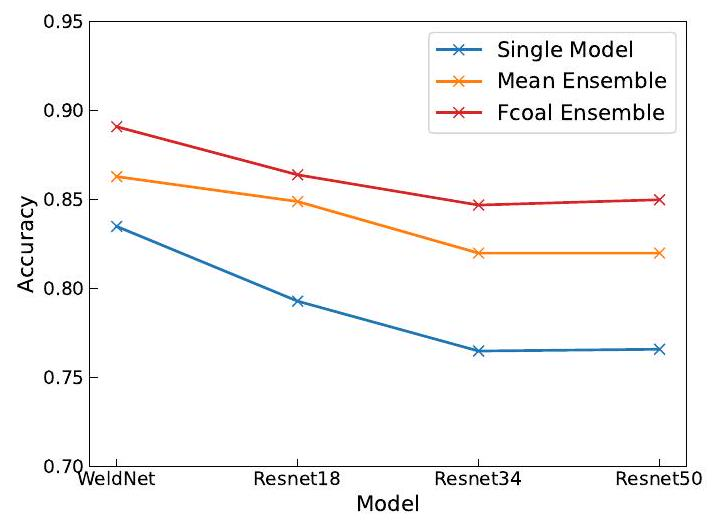
Fig. 13 Comparison of different training methods.
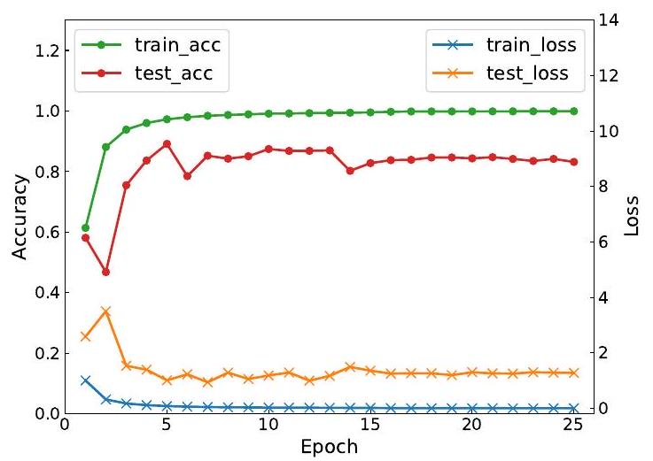
Fig. 14 Accuracy and loss during WeldNet Focal ensemble training. tional complexity during model deployment, thereby enhancing the generalization performance. This approach not only significantly surpasses the performance of existing models but also addresses the issue of model dependency on specific equipment in weld defect detection. Based on the public dataset TIG AL5083 dataset, the method has a better detection performance for weld images than all existing networks, with an accuracy higher than ResNet18 model with only of its parametric count. These findings are of great significance for future research and development in this field.
Although our proposed network has achieved relatively high performance and can be practically deployed in industrial scenarios, there are still certain limitations that need to be addressed. One such limitation is its heavy reliance on a large number of manually annotated labels for training. This dependency on labeled data poses challenges in terms of scalability and cost-effectiveness. To overcome this bottleneck, future research directions will focus on exploring semisupervised or unsupervised learning approaches to further optimize the weld defect detection model. These approaches aim to leverage unlabeled data or utilize limited labeled data more efficiently, reducing the reliance on extensive manual annotation. By adopting these methodologies, we aim to improve the scalability, generalization, and cost-efficiency of the model, making it more practical and applicable in real-world industrial settings. signing an efficient lightweight network WeldNet, combined with the training strategy of ensemble-distillation. Compared with single ResNet18 model, our WeldNet+FE+KD accuracy is higher, and the number of participants is only of it.
In this study, we propose a lightweight detection network called WeldNet for defects generated in the welding process. In addition, we also propose an ensembledistillation training approach, which effectively combines multiple models without adding extra computa-
The authors declare that they have no known competing financial interests or personal relationships that could have appeared to influence the work reported in this paper.
This study is supported by Shandong Province Key Research and Development Program, No. 2020CXGC011201.
Table 4 Accuracy and number of parameters of the models obtained by different training methods. FE represents Fcoal ensemble and KE represents knowledge distillation.
| Accuracy(%) | Parameters(10 | FPS(CPU) | |
|---|---|---|---|
| MobileNet v3 small | 78.2 | 0.13 | 36.5 |
| MobileNet v3 large | 78.7 | 0.42 | 12.2 |
| ResNet18 | 79.3 | 1.12 | 16.7 |
| WeldNet | 83.5 | 0.30 | 41.4 |
| WeldNet+FE | 89.1 | 1.49 | 13.2 |
| WeldNet+FE+KD(Ours) |
Data will be made available on request.